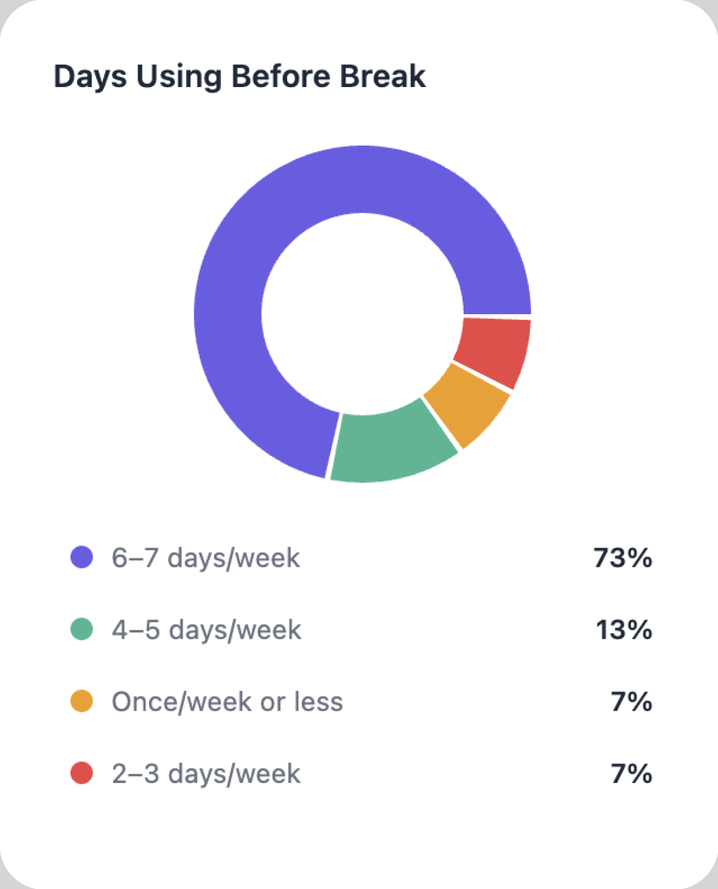
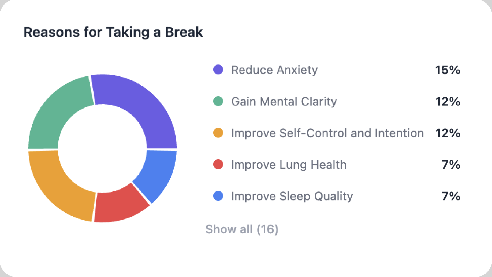
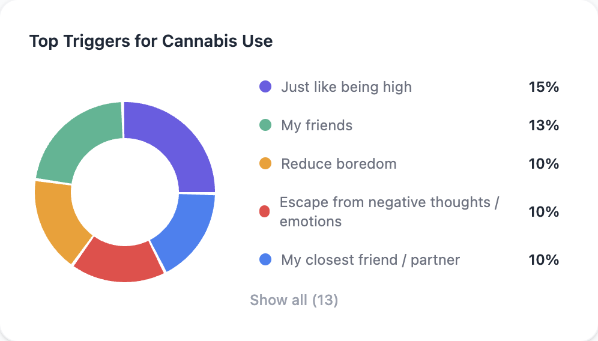
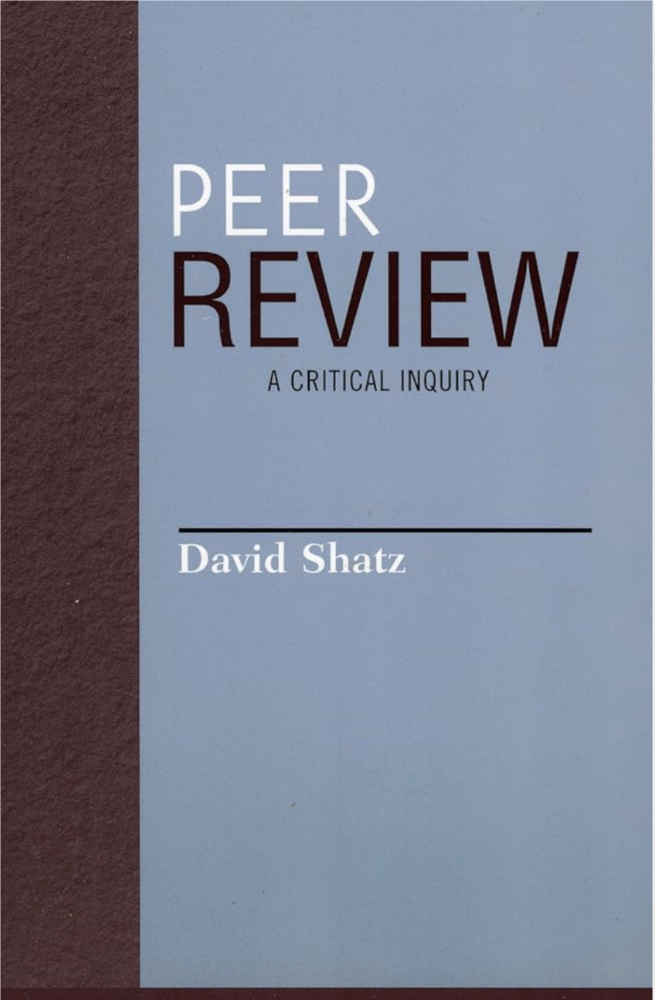

The Most Research-Backed CannabisIntervention Available
Built by a team that has published hundreds of peer-reviewed studies with tens of thousands of citations across addiction science, digital intervention, and cannabis research, and funded by the National Institutes of Health.



Research backed by universities
We evaluate engagement, outcomes, and real-world use of digital cannabis support tools.
Engagement
how often users show up and stick with it
Outcomes
Changes in behavior or wellbeing
Real-world use
How people apply it outside the app
" This includes collaborations with teams at the University of Michigan and Harvard University, helping assess Clear30 as a scalable option for students and young adults navigating cannabis use. "
Research partners
Clear30 collaborates with the University of Michigan's Digital Cannabis Clinical Care (DC³) initiative to evaluate and scale evidence-based cannabis support for students and young adults.
Our research partnerships with Harvard-affiliated teams help assess Clear30's effectiveness as a scalable intervention for cannabis use among college students and young adults.
Funded by the National
Institutes of Health
- Clear30's development has been funded through the NIH and the National Institute on Drug Abuse, the gold standard in federal research funding. These grants are competitively reviewed and awarded to technologies with strong scientific foundations and real public health potential.
- This funding has supported everything from building the core intervention to assembling the team of subject matter experts behind it. It's also funding the development of an adolescent version of Clear30, expanding support to even younger users who need it.
- When you partner with Clear30, you're working with a program that's held to the same research standards as the institutions you already trust.
Scientific and Clinical Advisors
- Clear30's advisory leadership provides expert guidance across addiction science, clinical care, public health policy, and behavior change.
- These advisors help ensure Clear30 is developed and evaluated in ways that align with established research, real-world clinical practice, and the needs of institutions supporting student and young adult well-being.
- Their involvement strengthens Clear30 as a responsible, evidence-informed partner for universities and health organizations.
Advisory Leadership
-
Alan Budney, PhD
Professor at Dartmouth College and one of the world's leading researchers in cannabis use disorder treatment, behavioral therapies, and treatment outcomes.
-

A. Thomas McLellan, PhD
Creator of the Addiction Severity Index and former U.S. Deputy Director of National Drug Control Policy, with decades of experience shaping addiction treatment standards and national policy.
-
Stephen D'Antonio
Former Executive Vice President at Shatterproof, trained in evidence-based family treatment approaches and large-scale behavioral health program implementation.
-
Kamala Génecé
Chief Clinical Officer at Behavioral Health Group, focused on clinical implementation of evidence-based behavioral health supports across care settings.
-
Lauren Johnson
Marketing Director at Fors Marsh, specializing in public health communications, behavior change messaging, and large-scale health campaigns.
-
Marcia Lee Taylor
Founder of MLT Strategies to reduce opioid overdoses, former EVP Head of Policy at Partnership to End Addiction.
Peer-reviewed research and publications
Clear30's design and approach are informed by a broad body of peer-reviewed research contributed by its leadership and advisors.
These publications span digital mental health, addiction treatment, behavior change, and cannabis use, and reflect decades of academic and clinical work that shape how Clear30 is built and evaluated.
